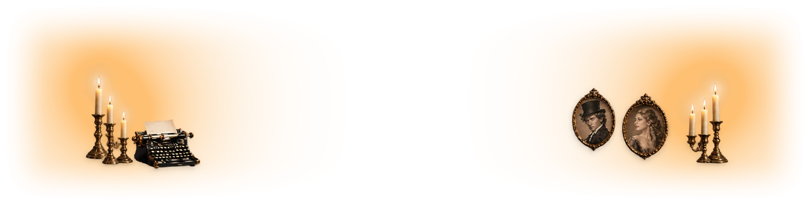
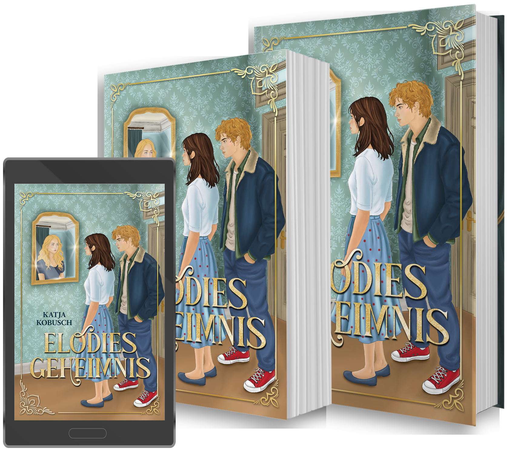

Ein Wochenende im malerischen Künstlerdorf Klüpfenhagen zu verbringen, um den achtzigsten Geburtstag ihrer Oma zu feiern, klingt für Olivia nicht nach einem großen Abenteuer.
Dann beginnt die antike Schreibmaschine in ihrem Jugendstil-Hotelzimmer plötzlich, von allein zu tippen.
Natürlich glaubt Olivia nicht an Geister. Zumindest nicht wirklich. Doch irgendetwas scheint in Klüpfenhagen auf sie gewartet zu haben. Und je tiefer sie gemeinsam mit dem sexy Museumsmitarbeiter Sam in die Vergangenheit des Künstlerdorfs eintaucht, desto mehr fühlen sich die Ereignisse wie Hinweise an.
Zwischen alten Gemälden, verborgenen Spuren und ziemlich gegenwärtigem Herzklopfen wird aus einem Familienwochenende eine Suche nach der Wahrheit. Und bald stellt sich für Olivia nicht nur die Frage, was vor über hundert Jahren passiert ist. Sie muss auch entscheiden, wie weit sie bereit ist, für das zu gehen, was sie für richtig hält.
Ein Jugendroman über Kunst und Geheimnisse, Herzklopfen, Haltung und den Mut, für die eigene Überzeugung einzustehen.
eBook exklusiv bei Amazon. Soft- und Hardcover ab 17.10.26 überall, wo es Bücher gibt.
Museum Meet Sam & Olivia Cast Leseprobe